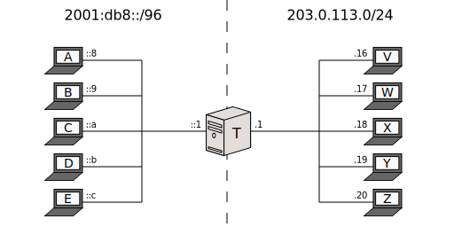

Documentation > Introduction > NAT64
Introduction to IPv4/IPv6 Translation
Index
Introduction
This document provides a general introduction to SIIT and NAT64.
IPv4/IPv6 Translation
SIIT (Stateless IP/ICMP Translation) and NAT64 (“NAT six four”, not “NAT sixty-four”) are technologies meant to communicate networking nodes which only speak IPv4 with nodes that only speak IPv6.
The idea is basically that of an “upgraded” NAT; an “IPv4/IPv6 translator” not only replaces addresses and/or ports within packets, but also layer 3 headers.
- SIIT is the simpler form, and allows preconfigured 1-to-1 mappings between IPv4 addresses and IPv6 addresses.
- A Stateful NAT64 (or NAT64 for short) allows several IPv6 nodes to dynamically share few IPv4 addresses (useful when you’re a victim of IPv4 address exhaustion).
For historic reasons, sometimes we mess up and label SIIT as “Stateless NAT64”. Because this expression does not seem to appear in any relevant standards, we consider it imprecise, despite the fact it makes some degree of sense. If possible, please try to suppress it.
An SIIT implementation mangles network headers and sometimes transport checksums. A Stateful NAT64 also mangles transport identifiers.
That’s all, really. Keep reading for more detail and examples.
SIIT with EAM
This is the easiest one to explain. Consider the following setup:

(T stands for “Translating box”.)
Assuming everyone’s default gateway is T, how do you communicate A (IPv6) with V (IPv4)?
- You tell T, “The IPv4 address of A should be 198.51.100.8, and the IPv6 address of V should be 2001:db8:4::16”.
- You tell A, “V’s address is 2001:db8:4::16”.
- You tell V, “A’s address is 198.51.100.8”.
The first one is accomplished by SIIT. The latter can be done via DNS.
This will happen:

The translator is “fooling” each node into thinking the other one can speak their language.
“EAM” stands for “Explicit Address Mapping”, and is more versatile than simply binding arbitrary addresses to other arbitrary addresses. See the EAM draft or our summary of it for more information.
SIIT (traditional)
The basic form of SIIT is more constrictive. As a consequence, we need to change the sample IPv6 network:

The idea is to simply remove a prefix while translating from IPv6 to IPv4, and append it in the other direction:

Of course, this means each node’s IPv4 address has to be encoded inside its IPv6 address, which is a little annoying.
While this explanation might make it seem like “EAM” SIIT and “traditional” SIIT are different things, this is not the case. Implementations are expected to always try to translate an address based on the EAM table first, and if no mapping is found, fall back to append or remove the prefix. The separation was done here for illustrative purposes. You can find a concrete example of how “traditional” and “EAM” SIIT can be combined to fit a use case in draft-v6ops-siit-dc.
SIIT is defined by RFC 6145. The address translation hack has more ways to embed the IPv4 address not shown here, and is fully defined by RFC 6052. Whenever RFC 6052 is involved, it’s usually convenient to also have a DNS64 so users don’t need to be aware of the prefix.
Stateful NAT64
This mode is more akin to what people understand as “NAT”. As such, allow me to remind you the big picture of how (stateful) NAT operates:

The idea is, the left network is called “Private” because it uses addresses unavailable in the global Internet. In order to make up for this, NAT mangles packet addresses so outsiders think any traffic started by the private nodes was actually started by itself:

As a result, for outside purposes, nodes A through E are “sharing” NAT’s global address (or addresses).
While stateful NAT helps you economize IPv4 address, it comes with a price: NAT has to remember which private node issued the packet to V, because A’s address cannot be found anywhere in V’s response. That’s why it’s called “stateful”; it creates address mappings dymanically and remembers them for a while. There are two things to keep ind mind here:
- Each mapping requires memory.
- V cannot start a packet stream with A, again because NAT must learn the mapping in the private-to-outside direction first (left to right).
Stateful NAT64 is pretty much the same. The only difference is that the “Private Network” is actually an IPv6 network:

And therefore,

Now, that’s where the similarities with NAT end. You don’t normally say the IPv6 network is “Private”, because the whole point is that it should also be connected to the IPv6 Internet:

In this way, A through E are IPv6-only nodes, but they have access to both Internets (the IPv6 one via router R, and the IPv4 one via T).
Stateful NAT64 is defined by RFC 6146 and is most of the time coupled with DNS64.